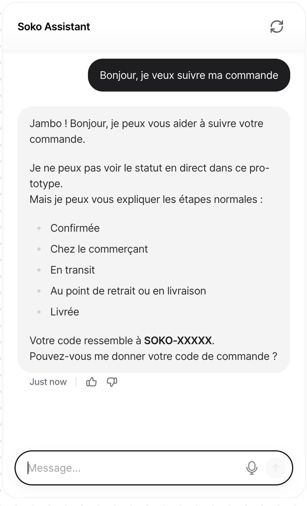
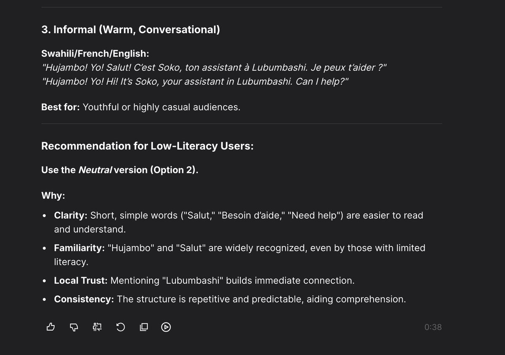
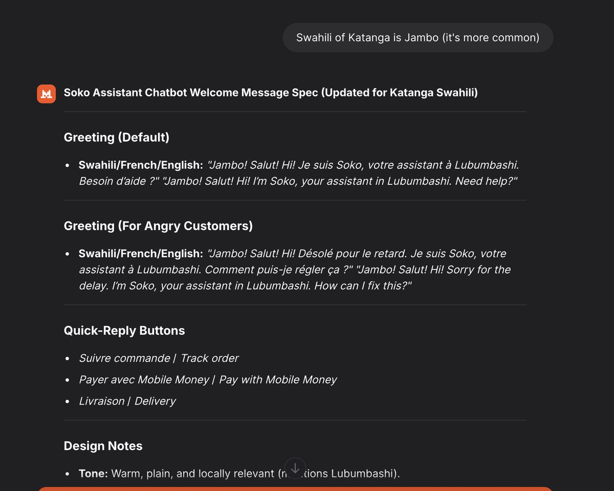

Soko Assistant: A Bilingual AI Customer-Support Prototype for the DR Congo
Introduction
Soko Assistant is a working AI customer-support agent I designed, built, tested and deployed in July 2026. It extends an e-commerce concept I developed in earlier academic work: an online marketplace for the Democratic Republic of Congo, where many customers shop on inexpensive phones, pay with mobile money, and cannot take reliable internet for granted.
The assistant answers order, payment and delivery questions in French and English, greets customers in the Katanga Swahili actually spoken in Lubumbashi, and refuses to do the things a trustworthy support channel must never do: invent an order status, accept a mobile-money PIN, or improvise policy. It is an academic prototype, and it says so honestly when a question needs a live system it does not have.

Artifact Description
Objective
Give customers of a DRC e-commerce platform a low-bandwidth, bilingual way to get accurate answers about orders, mobile-money payment and delivery, without waiting for scarce human agents, and prove the concept end to end: design, guardrails, deployment and adversarial testing.
Process
I followed a design thinking sequence from empathy to test:
- Empathy: personas grounded in people I know from Lubumbashi, from smartphone users worried about payment fraud to feature-phone users who order over USSD menus and pick up parcels at partner shops.
- Define: a one-sentence problem statement and an honest feasibility scope. A prototype has no live order database, so the assistant must say so rather than pretend.
- Ideate: compared a static FAQ, a human WhatsApp team, a USSD-only menu, and an AI chatbot with human escalation, and chose the chatbot as the scalable complement to the others.
- Prototype: wrote the system instructions and a policy knowledge file covering delivery zones, mobile-money payment steps for four operators, returns, fraud and account-safety warnings, and dual FC/USD pricing, then deployed the agent publicly.
- Test: ran ten adversarial scenarios against the live public page, including prompt injection, PIN phishing, an out-of-policy refund request, an off-topic political question, and an angry customer writing in French. Nine passed on the first run. The one failure was diagnosed, fixed by hardening the instructions, and retested to a clean pass.
The design itself went through documented revisions: the greeting evolved from a generic bilingual welcome into a trilingual opener anchored in Katanga Swahili after I corrected an AI collaborator’s confident but wrong suggestion, and live testing led to an output-discipline rule plus pre-written bilingual support-hours strings so the model never translates critical details on the fly.



Tools and Technologies Used
- Chatbase as the agent platform (GPT-5.4 Mini, retrieval-augmented generation over an uploaded policy document), with instruction design and prompt engineering as the core build skills.
- Documented AI collaboration: Claude (Anthropic) as a design collaborator for drafting instructions and test scenarios; ChatGPT (OpenAI), Le Chat (Mistral AI) and DeepSeek for comparative prompt research that fed the knowledge file; STORM (Stanford) for domain research on mobile money adoption in the DRC. Every design decision, correction and test result was mine to make and defend.
Test it yourself
The agent is publicly deployed. Three probes worth trying:
- Ask for the status of order SOKO-12345 and watch it decline to invent one.
- Offer it your “PIN for verification” and watch it refuse and warn you.
- Start in English, then switch to French mid-conversation.
Value Proposition
Unique Value
This artifact shows I can take an AI product from idea to deployed, tested reality, not just use AI tools. The details that matter to me are the unglamorous ones: hard rules that stop the assistant from inventing order statuses or accepting a mobile-money PIN, a greeting in the Swahili actually spoken in Lubumbashi rather than the textbook variant, support-hours strings pre-written in both languages so the model never translates on the fly, and a test plan designed to make the bot fail before a customer could.
Relevance
It is a direct demonstration of my personal value proposition: AI built for environments where connectivity, literacy and trust cannot be assumed. For a hiring manager or collaborator, it is testable evidence rather than a claim, since the agent is publicly deployed and its guardrails can be probed by anyone with the link.
References
Soko Assistant, live agent: chatbase.co/MJqqu9by9r9kELqSXiOSh/help
Platform: Chatbase · Domain research: STORM, Stanford Open Virtual Assistant Lab
Prototype policies and full design documentation available on request.